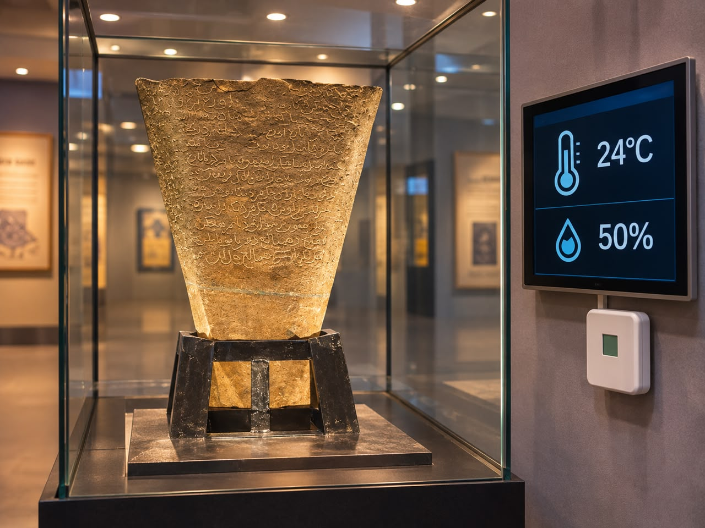

KAEDAH 1
Kawalan Suhu dan Kelembapan
Keadaan suhu dan kelembapan persekitaran perlu dipantau bagi mengurangkan risiko perubahan fizikal pada permukaan batu. Pemantauan secara berkala dapat membantu mengenal pasti keadaan persekitaran yang berpotensi menjejaskan kestabilan artifak.
Gambar ilustrasi: pemantauan suhu dan kelembapan di ruang pameran.